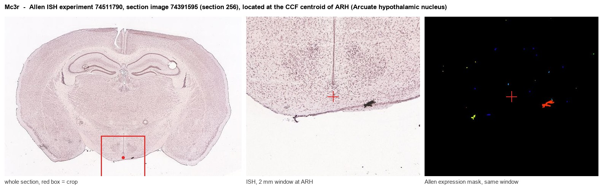
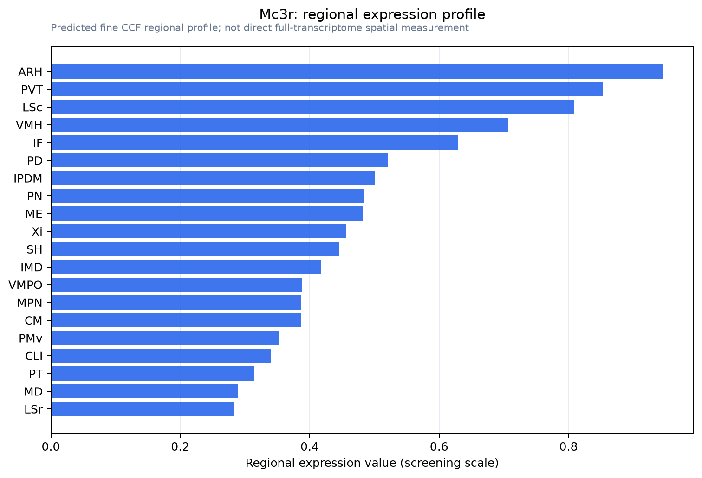

Mc3r
Melanocortin receptor 3 (MC3-R)
Spatial tier: RESTRICTED · Class: GPCR · Top region: ARH (Arcuate hypothalamic nucleus) · Positive regions: 28/554
45.5Discovery Score
38.8Targetability Score
CEvidence grade C
What this means: Mc3r: fine CCF profile is restricted toward ARH (top regions: ARH, PVT, LSc, VMH, IF; 28 positive regions); direct spatial validation is still required.
Function in ARH: evidence, prediction, innovation
- Gene function
- MC3R is one of the five melanocortin receptors, a Gs-coupled class A GPCR activated by alpha-MSH and other POMC-derived peptides and antagonised by AgRP. Unlike MC4R, which drives satiety in downstream nuclei, MC3R acts largely as a presynaptic and somatodendritic autoreceptor within the melanocortin system itself, setting the gain of the circuit rather than directly suppressing feeding.
- Region function
- The arcuate hypothalamic nucleus sits against the median eminence and contains orexigenic AgRP/NPY and anorexigenic POMC neurons plus GHRH and kisspeptin cells; it is the brain's primary interface for leptin, ghrelin and insulin signals controlling feeding, growth and reproduction.
- Published in this region
- direct Direct. Gui et al. 2023 showed that MC3R knockout mice have markedly fewer Fos-positive AgRP neurons after a 24 h fast and blunted fasting-induced upregulation of AgRP and NPY mRNA, and that AgRP-neuron-specific MC3R deletion reproduces the blunted response to fasting and ghrelin, establishing a cell-autonomous role in arcuate AgRP cells. Girardet et al. 2018 showed MC3R on AgRP neurons inhibits feeding in female mice, and Lam et al. 2021 linked human MC3R loss-of-function to later puberty and reduced linear growth.
- Predicted function
- Prediction: because MC3R is the sensor allowing AgRP neurons to be recruited by energy deficit, it should also gate the reproductive and growth arms of the arcuate. Arcuate-restricted MC3R deletion is predicted to leave ad libitum feeding and food-cue-driven AgRP inhibition intact while flattening AgRP recruitment by fasting, cold and ghrelin, delaying pubertal onset and lowering IGF1; an MC3R-selective agonist in the arcuate should suppress AgRP recruitment and blunt refeeding hyperphagia.
- Innovation
- ★★☆☆☆ 2/5 MC3R in arcuate AgRP neurons is now well characterised, though its role in arcuate kisspeptin and GHRH cells linking nutrition to puberty remains comparatively open.
- Tools
- Mc3r floxed and Mc3r-null mice, Mc3r-Cre and Mc3r-eGFP lines; agonist D-Trp8-gamma-MSH and MC3R-selective analogues; antagonists SHU9119 (non-selective) and MC3R-selective peptides; Agrp-Cre and Pomc-Cre for conditional deletion.
- References
Direct evidence located at the region

Allen ISH experiment 74511790, section image 74391595 (section 256): the section that contains the CCF centroid of Arcuate hypothalamic nucleus according to the Allen image-to-atlas alignment (reference_to_image), with a 2 mm window around that point. Left: whole section, red box = window. Middle: ISH signal. Right: Allen's expression-mask view of the same window. open this image in the Allen viewer
Look it up yourself: Allen Mouse Brain ISH for Mc3rAllen reference atlas: ARH (structure 223)ABC Atlas MERFISH viewer(in the ABC Atlas choose dataset MERFISH-C57BL6J-638850-CCF, colour cells by gene "Mc3r" or by parcellation_substructure "ARH")All genes confined to ARH + 3-D brain
Direct spatial evidence
MERFISH REGION LOCATOR

Regional expression figure

Predicted WMB × fine-CCF profile; not direct full-transcriptome spatial measurement.
Spatial profile
Evidence and specificity
- Evidence status
- PREDICTED_FINE
- Direct sources
- None; predicted localization only
- Exclusive threshold
- 12 positive regions out of 554
- Spatial specificity
- 0.324
- Top-region fraction
- 0.053
- Filter status
- PASS
Interpretation limits
- Cell-type-to-region projection is imputed expression, not direct spatial measurement.
- Adult reference atlases do not establish stability across age, sex, strain, state, or disease.
- Transcript abundance does not guarantee protein abundance or genetic-tool performance.